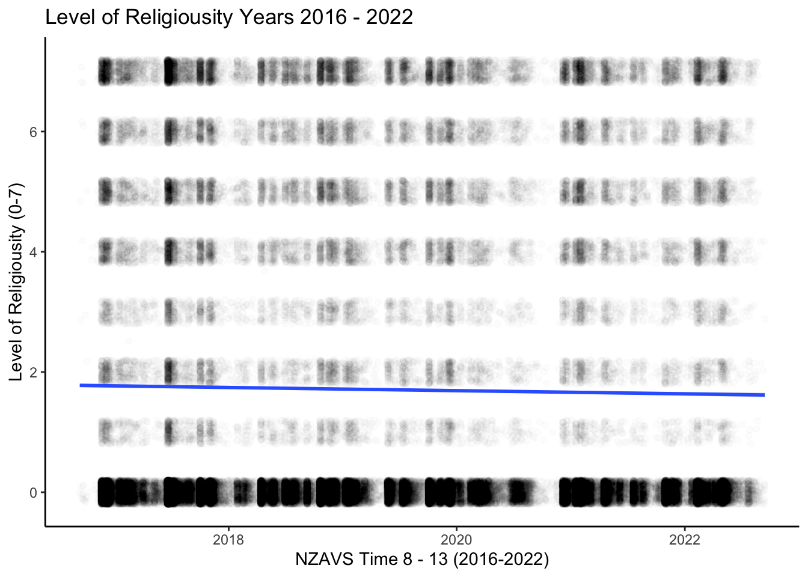
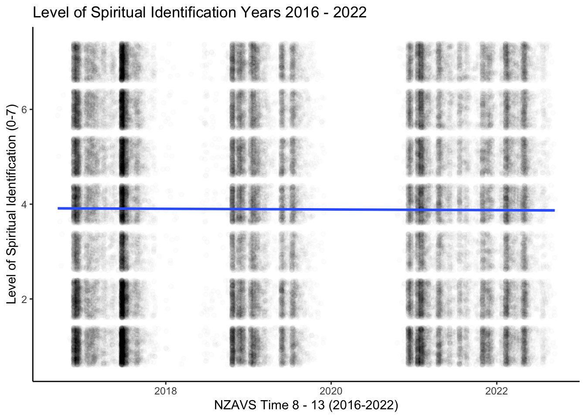
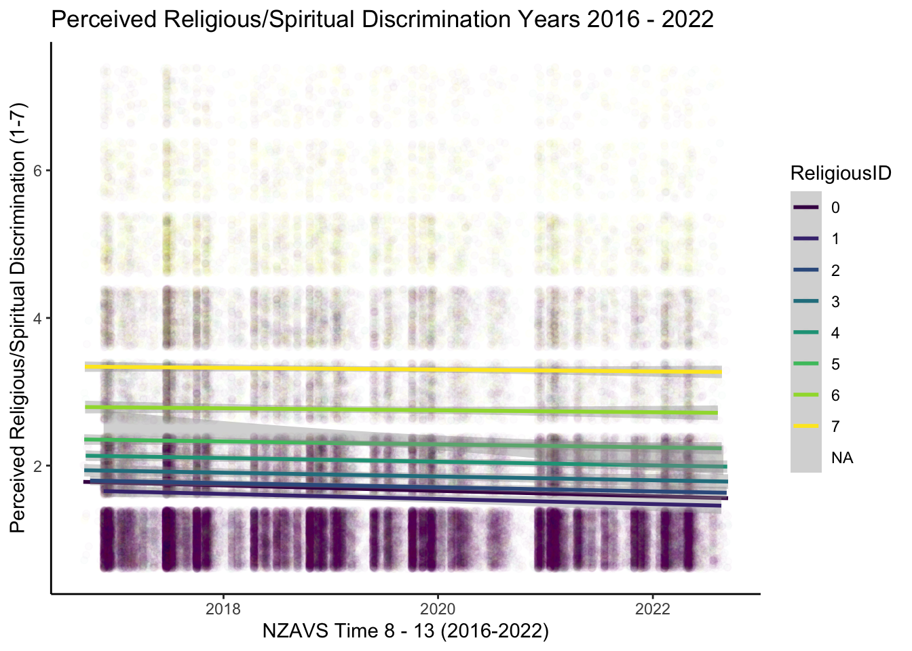
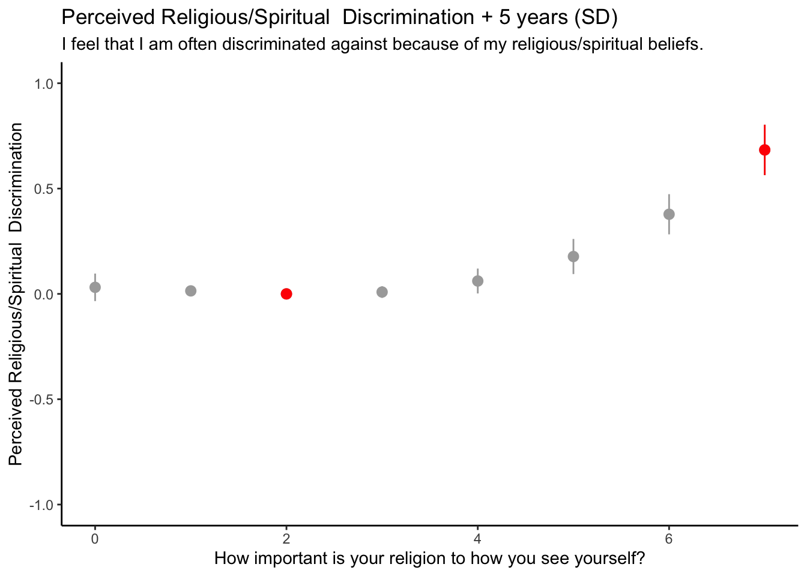
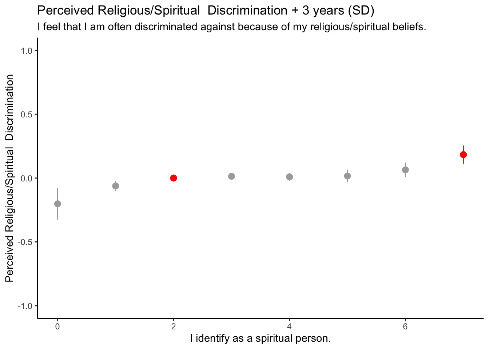
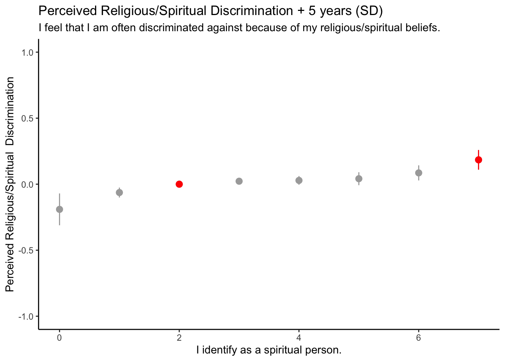
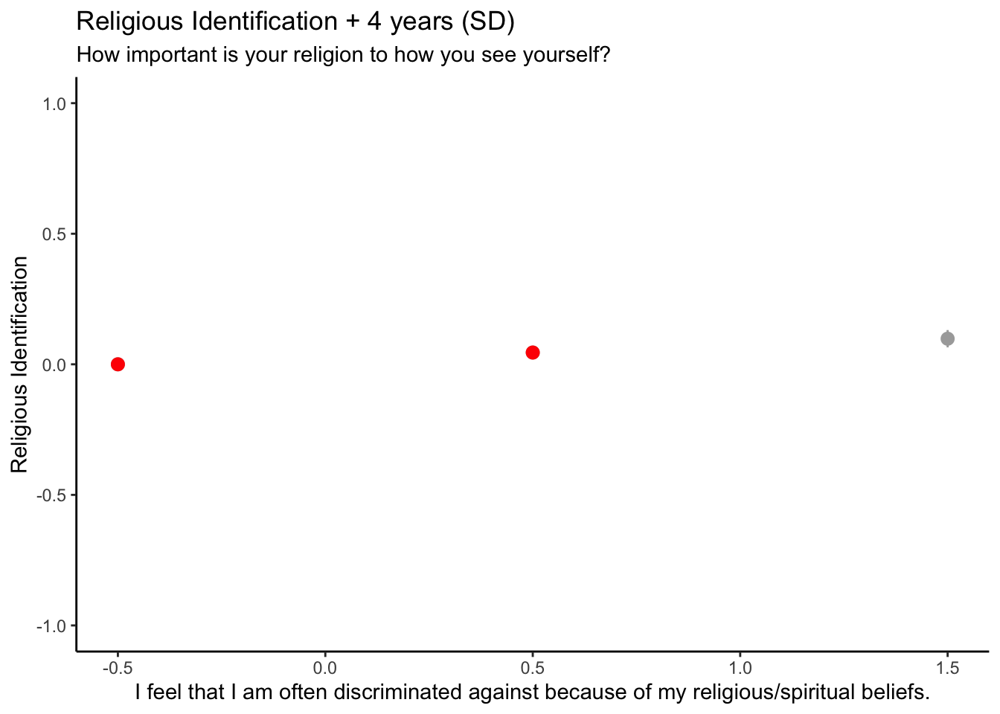
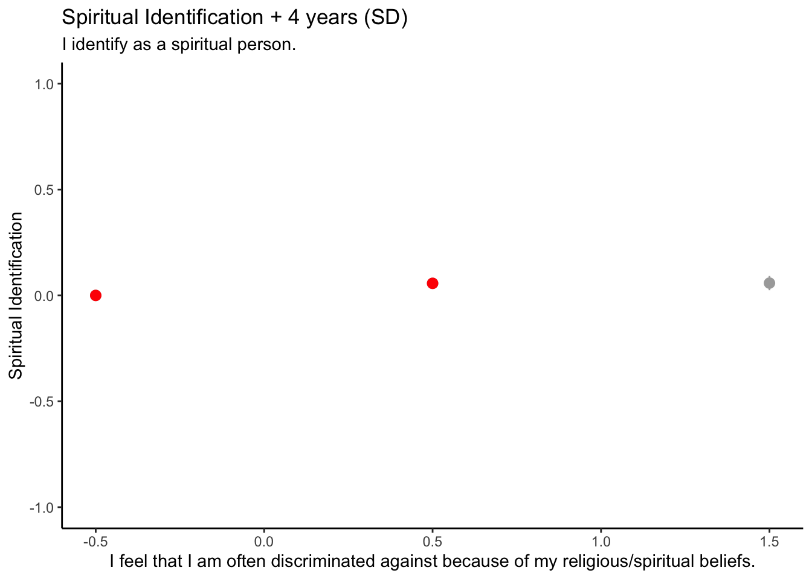

![]()
Overview
We have three interests.
First, we leverage data from a national longitudinal study in New Zealand to describe trends in self-reported perceptions of anti-religious prejudice in New Zealand during the years 2015-2022.
Second, we leverage time-series data to identify whether it is religious commitment that is responsible for perceptions prejudice or some third factor. That is, leverage time-series data to identify causality.
Third, we briefly speculate about the relevance of these findings to different audiences.
Method
Results
| Time8 | Time9 | Time10 | Time11 | Time12 | Time13 | |
|---|---|---|---|---|---|---|
| (N=21936) | (N=21867) | (N=21796) | (N=21717) | (N=21661) | (N=21936) | |
| Mean (SD) | 2.04 (1.42) | 2.07 (1.43) | 1.96 (1.36) | 1.93 (1.37) | 1.89 (1.35) | 1.86 (1.33) |
| Median [Min, Max] | 1.00 [1.00, 7.00] | 1.00 [1.00, 7.00] | 1.00 [1.00, 7.00] | 1.00 [1.00, 7.00] | 1.00 [1.00, 7.00] | 1.00 [1.00, 7.00] |
| Missing | 780 (3.6%) | 6742 (30.8%) | 6089 (27.9%) | 7995 (36.8%) | 8099 (37.4%) | 10060 (45.9%) |








Conclusion
Notes: - do experiences of prejudice among people of the faith foster greater acceptance of religious minorities (Shaver et al. 2016)?
The topic is under-researched. religious decline is slow. Although religious people are a minority in New Zealand, for most of New Zealand’s colonial history there has been a religious majority. Because the decline in religious identification is less than 1% annually, the proportion of religious proportion year-to-year is not substantially different (Hoverd et al. 2015). Like the receding of a glacier, the decline of the religious minority is not readily apparent to the naked eye. Although these facts may help to explain the poverty of research on anti-religious prejudice, they do not provide excuses for ignoring it.
Importance
There are three audiences who might be interested in the longitudinal study of anti-religious prejudice.
First, there are social scientists. There has been considerable scientific attention to study of prejudice against historically marginalised groups. However, in countries such as New Zealand, religious people have only recently become the minority. Moreover, the bulk of prejudice research occurs in North America where the religiously identified remain a majority.
Second, there are philosophers and theologians. If we assume that good philosophy and theology must be grounded in the facts, it would seem important to include a growing religious minority in philosophical and theological reflection about prejudice.
Third, there are members of religious communities, including clergy. If the study of anti-religious prejudice reveals that many religious people are indeed experiencing greater prejudice religious communities should want to know.
References
Reuse
Citation
@online{bulbulia2022,
author = {Joseph Bulbulia and Chris G. Sibley},
title = {Religious {Descrimination} and {Religious} {Identification:}
{Unpacking} {Causality} {Using} {National} {Panel} {Data}},
date = {2022-11-02},
langid = {en}
}